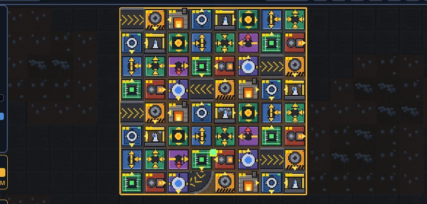
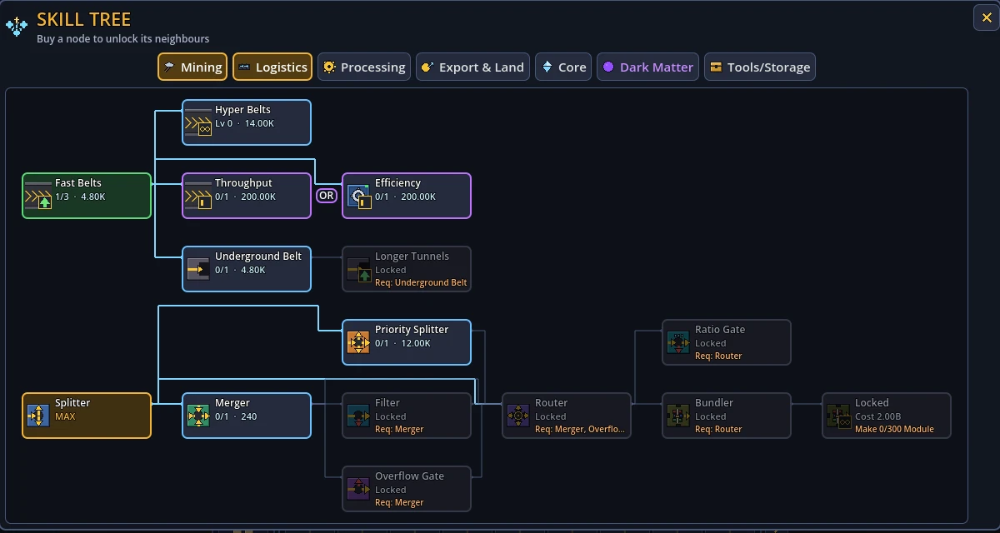
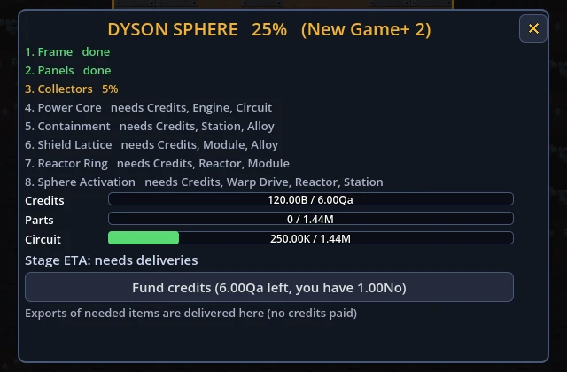
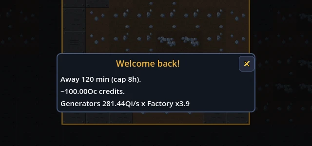

Click a rock. Build a factory. Wrap a star.
An idle factory game for Windows. Start with a single click on a core, grow it into a belt-fed machine empire that keeps running while you are away, and spend it all on one goal: a Dyson Sphere.
Every run follows the same arc, and every stage makes the next one faster.
Hit the core for credits. Build up a combo, buy generators, and unlock your first tiles.
Lay belts, splitters, mergers and routers. Miners feed smelters, smelters feed assemblers, the shipyard feeds export.
Reset the run for Dark Matter, a permanent multiplier, and come back stronger.
Build the sphere stage by stage. Finish it and start over with New Game+.
Buy land to push the map outward in chunks and keep building. Every tile has a job: belts, splitters, mergers, underground tunnels, storage crates, bundlers and ratio gates.
Machines get more expensive in blocks as you own more, so growth stays a decision rather than a button mash.


Seven tabs of nodes spend your credits and Dark Matter. Some come in exclusive OR pairs: pick one and the other is gone until you prestige.
Unlock new tiles, faster belts, longer tunnels and endless upgrades as the run grows.
The end goal has eight stages. Export the parts each one needs and fund the rest with credits.


Close the game and your factory keeps earning. When you return, a summary shows what it made, for up to eight hours away.
44 achievements and a long list of missions give each session something to chase.
One file. Download it, run it, and the game checks for updates on its own.